Inhalt Index DeskTop Bronstein

 Vektoranalysis und Feldtheorie Grundbegriffe der Feldtheorie Vektorfelder
Vektoranalysis und Feldtheorie Grundbegriffe der Feldtheorie Vektorfelder


| Kartesische Koordinaten | Zylinderkoordinaten | Kugelkoordinaten |
| 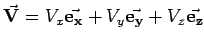 | 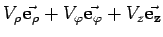 | 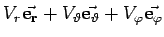 |
| Vx= | 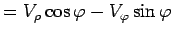 | 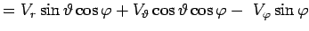 |
| Vy= | 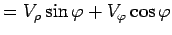 | 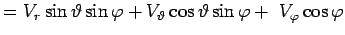 |
| Vz= | =Vz | 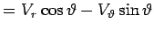 |
| 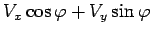 | 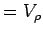 | 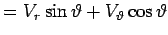 |
| 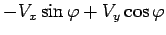 | 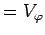 | |
| Vz | =Vz | |
| 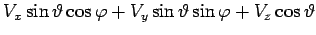 | 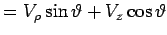 | =Vr |
| 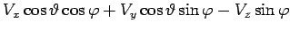 | 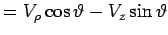 | 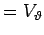 |
Hinweis: Beim Übergang von einem Punkt zu einem anderen ändern zwar die Koordinatenvektoren ihre Richtung, sie stehen aber stets senkrecht aufeinander.